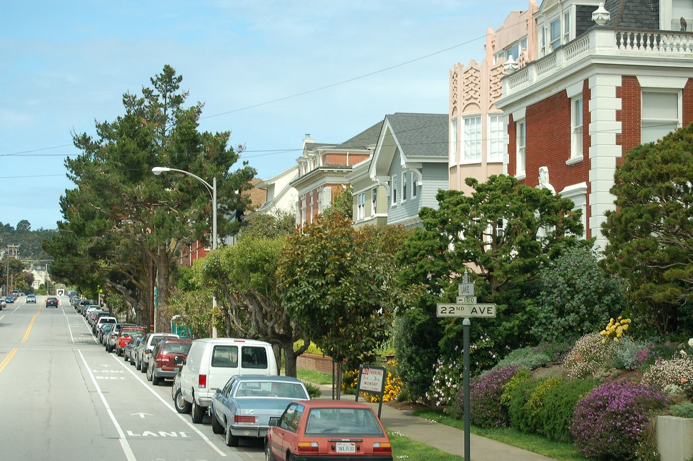

Seacliff
An affluent residential enclave on the bluffs above the Golden Gate, laid out from the 1910s, much of it within the Sea Cliff Historic District.

Map
Named buildings and landmarks
Streets documented so far
- 16th Avenue
1 building, built 1916. - 17th Avenue
1 building, built 1913. - 19th Avenue
1 building, built 1910. - 22nd Avenue
3 buildings, built 1910–1950. - 23rd Avenue
1 building, built 1908. - 24th Avenue
One 1903 house across two lots, tied to Ansel Adams. - 25th Avenue
1 building, built 1924; 1 in the Sea Cliff Historic District. - 26th Avenue
3 buildings, built 1922–1974; 1 in the Sea Cliff Historic District. - 27th Avenue
2 buildings, built 1912–1950; 2 in the Sea Cliff Historic District. - 28th Avenue
1 building, built 1922; 1 in the Sea Cliff Historic District. - 29th Avenue
1 building, built 1919. - 30th Avenue
1 building, built 1910. - 31st Avenue
1 building, built 1992. - El Camino Del Mar
An eighteen-room 1926 house above the Golden Gate; a part-time Robin Williams residence. - Lake Street
1 building, built 1913. - Mclaren Avenue
1 building, built 1924; 1 in the Sea Cliff Historic District. - Seacliff Avenue
3 buildings, built 1914–1916; 3 in the Sea Cliff Historic District. - West Clay Street
1 building, built 1912.
Parks and public spaces
- DuPont Tennis Courts
Neighborhood park or playground, 40,511 sq ft. - Rochambeau Playground
Neighborhood park or playground, 39,640 sq ft.
Historic districts here
Adjacent neighborhoods
The Presidio adjoins east and Lincoln Park west, with the Golden Gate below the bluffs to the north. The Outer Richmond begins south-east of the enclave, and the Inner Richmond lies beyond it.